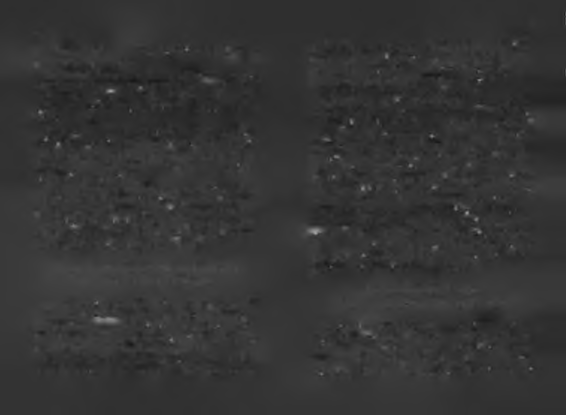

H indis ta nc e vizi ağacı üzeninde hayata tutunma testi!
lardır şu soruya cevap arar: Bir insan şu hayatta neleri biliyor
olsaydı, başarılı olma ihtimali başarısız olma ihtimalinden daha
Hayatta başarılı olacak çocukları belirlemekten daha dramatik
fazla olurdu?
yol, başarısız yaşlıları belirlemektir. Kültürel antropoloji tarihinde
Ben başarının öğrenilebilir olduğuna inanıyorum. Belki
bu konuda oldukça ilginç örnekler bulunur. İlkel bir toplulukefsanevi işler başarmak kitaptan öğrenilemez ama başarısız ta insanların "son kullanma tarihini" ölçen acımasız bir testi
sayılmayacak kadar büyük işler başarmak öğrenilebilir. Başarı
Yaşasın Hayat'ır\ yazarı Prof. Osman Müftüoğlu anlatmıştı.
hakkında öğrendiklerimizle kendimizi başarısızlıktan koru
"Afrika ya da Hint denizinde bulunan bir adada yaşlı insanla
yabilir, başarımızın kalıcılığını sağlayabiliriz. Başarının bilgisi
ra yapılan üzücii bir “yaşlılık testı'ni A. Maurois'in kitabında
bize başarıyı kontrol etme imkânı verir.
okumuş olmalıyım. Bu testte ada halkı yaşlandıklarını düşünen bir
Başarılı olmak zorla öğretilemez ama gönüllü olarak öğre
insanın gerçekten yaşlı hale gelip gelmediğini anlamak için, onu
nilebilir. "Kişisel geliştirme" değil, "kişisel gelişim" denmesi
hindistancevizi ağacının tepesine kadar çıkarır, sonra ağacı bütün
nin nedeni de, bu gönüllülük vurgusudur. Başarılı olmak bir
güçleriyle sallamaya başlarlarmış. Eğer yaşlı insan ağaçtan düşer
gönüllülük işidir ama çoğu kişi zorda kalınca nasıl başarılı
se onun ciddi derecede yaşlandığına Icarar verirlermiş. Maurois'e
olacağını düşünmeye başlar.
göre bu testler aslında bugün de mevcut. Modern toplumlarda da
Başarısız kalmanın en önemli nedenlerinden biri başarı
çok farklı hindistancevizi ağaçları var. Yazara göre "savaşlar gene
hakkında yeterince (b)ilgi sahibi olmamaktır. Dikkat ederseniz,
"bilgi” beş harflidir, beşte dördü "ilgi"dir! Başarıya ilginiz ölçü
rallerin, konserler sanatçıların, genç aşklar ise çapkınların" hindistancevizi ağaçlarıdır."
sünde, başarı bilginiz artacaktır.
İnanıyorum ki, başarınızın kalitesini başarı hakkındaki bilgileri
Hayat hepimizi farklı şekillerde hindistancevizi testine ta
nizin kalitesi belirler. Pek çok insan kulaktan dolma başarı bilgibi tutuyor. Bazılarımız başarıyla hayata tutunurken, "tutuna-leriyle yola çıkıp başarı enerjisini boşa harcar. Azimle çabalar
mayanlar"ımız kendini yerde buluyor. Hayata tutunabilmek
ama stratejileri yanlış olduğundan başarılı sonuçlar alamaz. Sonunya da tutunamamak, işte hepimiz için hayattaki en önemli da hem kendine ve hem de çabanın gücüne inancmı yitirip bamesele bu!
şarısız bir hayata katlanmanın yollarını aramaya başlar.
B ir insan şu hayatta ne le ri b iliyo r o ls a y d ı, b a ş a rılı olma ihtimali
Bu dünyada ba şa rılı olm ayı denem iş ilk kişi siz d e ğ ils in iz, son kişi de
b a ş a r ıs ız olma ihtimalinden daha fazla olurdu?
s iz olm a yac a ksın ız!
Hayatım insanları neyin başarılı, neyin başarısız yaptığı
Bu kitabı aldığınıza göre siz "kulaktan dolma bilgilerle"
na kafa yormakla geçti. Beynimin tüm arama motorları yılbaşarılı olmak isteyen insanlardan biri olmak istemiyorsu

83